Spring Security是一款基于Spring的安全框架，主要包含认证和授权两大安全模块，和另外一款流行的安全框架Apache Shiro相比，它拥有更为强大的功能。Spring Security也可以轻松的自定义扩展以满足各种需求，并且对常见的Web安全攻击提供了防护支持。如果你的Web框架选择的是Spring，那么在安全方面Spring Security会是一个不错的选择。
这里我们使用Spring Boot来集成Spring Security，Spring Boot版本为1.5.14.RELEASE，Spring Security版本为4.2.7RELEASE。
开启Spring Security
创建一个Spring Boot项目，然后引入spring-boot-starter-security：
1 | <dependency> |
接下来我们创建一个TestController，对外提供一个/hello服务：
1 |
|
这时候我们直接启动项目，访问http://localhost:8080/hello，可看到页面弹出了个HTTP Basic认证框：
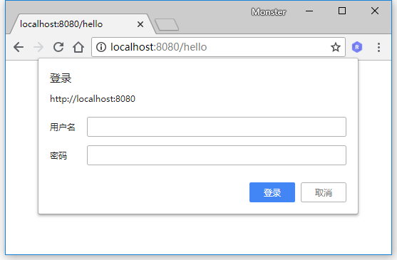
当Spring项目中引入了Spring Security依赖的时候，项目会默认开启如下配置：
1 | security: |
这个配置开启了一个HTTP basic类型的认证，所有服务的访问都必须先过这个认证，默认的用户名为user，密码由Sping Security自动生成，回到IDE的控制台，可以找到密码信息：
1 | Using default security password: e9ed391c-93de-4611-ac87-d871d9e749ac |
输入用户名user，密码e9ed391c-93de-4611-ac87-d871d9e749ac后，我们便可以成功访问/hello接口。
基于表单认证
我们可以通过一些配置将HTTP Basic认证修改为基于表单的认证方式。
创建一个配置类BrowserSecurityConfig继承org.springframework.security.config.annotation.web.configuration.WebSecurityConfigurerAdapter这个抽象类并重写configure(HttpSecurity http)方法。WebSecurityConfigurerAdapter是由Spring Security提供的Web应用安全配置的适配器：
1 |
|
Spring Security提供了这种链式的方法调用。上面配置指定了认证方式为表单登录，并且所有请求都需要进行认证。这时候我们重启项目，再次访问http://localhost:8080/hello，可以看到认证方式已经是form表单的方式了：
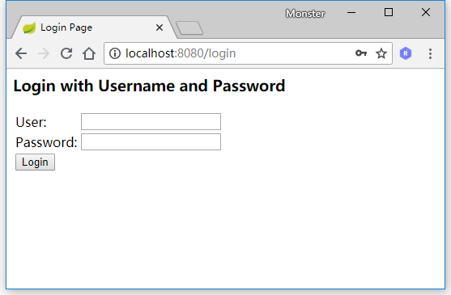
用户名依旧是user，密码由Spring Security自动生成。当输入凭证错误时，页面上将显示错误信息：
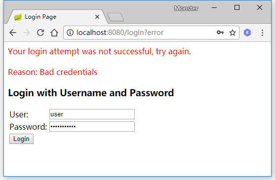
如果需要换回HTTP Basic的认证方式，我们只需要简单修改configure方法中的配置：
1 |
|
基本原理
上面我们开启了一个最简单的Spring Security安全配置，下面我们来了解下Spring Security的基本原理。通过上面的的配置，代码的执行过程可以简化为下图表示：
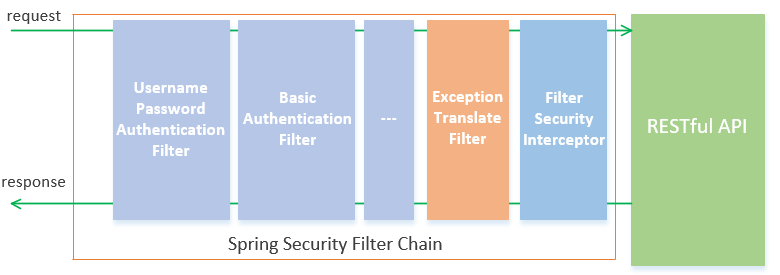
如上图所示，Spring Security包含了众多的过滤器，这些过滤器形成了一条链，所有请求都必须通过这些过滤器后才能成功访问到资源。其中UsernamePasswordAuthenticationFilter过滤器用于处理基于表单方式的登录认证，而BasicAuthenticationFilter用于处理基于HTTP Basic方式的登录验证，后面还可能包含一系列别的过滤器（可以通过相应配置开启）。在过滤器链的末尾是一个名为FilterSecurityInterceptor的拦截器，用于判断当前请求身份认证是否成功，是否有相应的权限，当身份认证失败或者权限不足的时候便会抛出相应的异常。ExceptionTranslateFilter捕获并处理，所以我们在ExceptionTranslateFilter过滤器用于处理了FilterSecurityInterceptor抛出的异常并进行处理，比如需要身份认证时将请求重定向到相应的认证页面，当认证失败或者权限不足时返回相应的提示信息。
下面我们通过debug来验证这个过程（登录方式改回表单的方式）。
我们在/hello服务上打个断点：
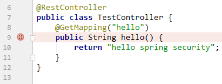
在FilterSecurityInterceptor的invoke方法的super.beforeInvocation上打个断点：
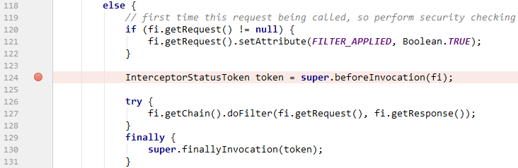
当这行代码执行通过后，便可以调用下一行的doFilter方法来真正调用/hello服务，否则将抛出相应的异常。
当FilterSecurityInterceptor抛出异常时，异常将由ExceptionTranslateFilter捕获并处理，所以我们在ExceptionTranslateFilter的doFilter方法catch代码块第一行打个断点：
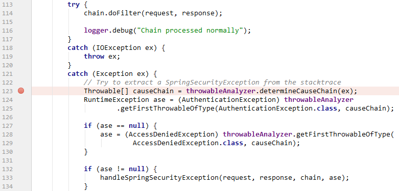
我们待会模拟的是用户未登录直接访问/hello，所以应该是抛出用户未认证的异常，所以接下来应该跳转到UsernamePasswordAuthenticationFilter处理表单方式的用户认证。在UsernamePasswordAuthenticationFilter的attemptAuthentication方法上打个断点：
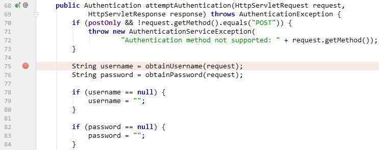
准备完毕后，我们启动项目，然后访问http://localhost:8080/hello，代码直接跳转到FilterSecurityInteceptor的断点上：
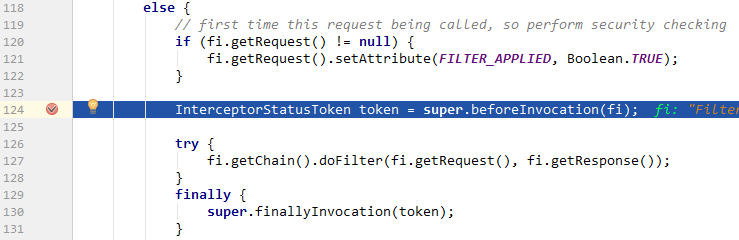
往下执行，因为当前请求没有经过身份认证，所以将抛出异常并被ExceptionTranslateFilter捕获：
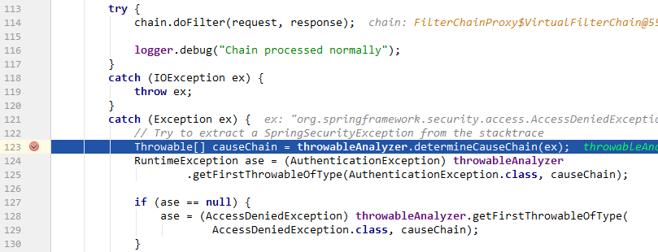
捕获异常后重定向到登录表单登录页面，当我们在表单登录页面输入信息点login后，代码跳转到UsernamePasswordAuthenticationFilter过滤器的attemptAuthentication方法上：
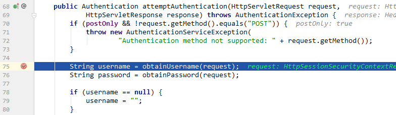
判断用户名和密码是否正确之后，代码又跳回FilterSecurityInterceptor的beforeInvocation方法执行上：
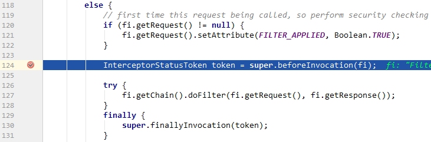
当认证通过时，FilterSecurityInterceptor代码往下执行doFilter，然后代码最终跳转到/hello上：

浏览器页面将显示hello spring security信息。
源码链接：https://github.com/wuyouzhuguli/Spring-Boot-Demos/tree/master/34.Start-Spring-Security